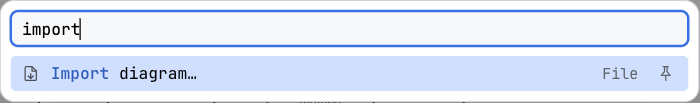
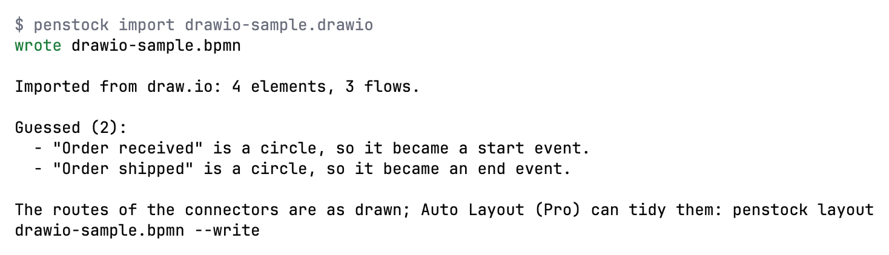

Guide / Moving and sharing
Import a diagram
Turn a draw.io, Visio, Signavio or Bizagi diagram into a BPMN 2.0 file, and get a list of everything that could not be carried over.
What can be imported
| From | Files |
|---|---|
| draw.io (diagrams.net) | .drawio, .xml, compressed or not |
| Visio | .vsdx |
| Signavio | .bpmn exported by Signavio |
| Bizagi | .bpmn exported by Bizagi, and a package that holds a BPMN file |
These are mapped: tasks and their kinds, events and their triggers, boundary events, gateways, sub-processes, pools, lanes, sequence flows, message flows and default flows, text annotations and data objects. The positions and the bends of connectors are kept.
These cannot be read: a Bizagi .bpm package, the old binary Visio .vsd, and XPDL. The message says what to do instead: from Bizagi, export BPMN 2.0 (a .bpmn file). From Visio, use File > Save As and choose Visio Drawing (.vsdx). From a tool that wrote XPDL, export BPMN 2.0.
Steps in the editor
- Open any diagram in the editor. Open More and choose Import diagram….
- A file chooser called Import diagram opens. Pick the file.
- A second dialog, Save the imported diagram, asks where to put the new BPMN file. It suggests a name:
order-process.bpmnfromorder-process.drawio. - The new diagram opens. A report dialog called Diagram imported lists what was and was not carried over.

Read the report
Nothing is dropped silently. The heading leads with the count, for example 3 not imported, and the report has three groups. What could not be mapped is in the warning colour; the red is kept for a file that could not be read at all.
| Group | What it says |
|---|---|
| Not imported | These have no BPMN meaning and are not in the new diagram. For example a cloud shape, or a line not attached to two shapes. |
| Guessed | These were read by what they look like. Check that they are what you meant. For example, elements outside every pool went into the nearest pool. |
| Not carried over | BPMN 2.0 has no place for these, so they are not in the new diagram. |
If nothing was left out, the report says Everything in the file was mapped. Connectors keep the route they were drawn with. Auto layout (Pro) can tidy the result.
In a terminal
penstock import diagram.drawio -o process.bpmn
Nothing is written if the file already exists, unless you pass --force or name another output with -o. A file that could not be read writes nothing at all. import is free, so it can run in a pipeline: convert a draw.io file kept in the repository before the check runs.
Import from your tool
JetBrains
Only from the editor, with More | Import diagram… as described above. To import files without opening an editor, use the command line.
Command line
$ penstock import order-process.drawio
wrote order-process.bpmn
Imported from draw.io: 9 elements, 7 flows, 2 pools, 2 lanes.
Not imported (2):
- "Legacy system" (cloud) has no BPMN meaning, so it was not imported.
- "to be decided" is not attached to two shapes, so it was left out.
Guessed (1):
- 2 elements outside every pool went into the nearest pool: "Call the customer if it takes longer", "Order".-o <file.bpmn>: the file to write. Default: next to the source, with the extension.bpmn. For a source that is already a.bpmnthe default isname.penstock.bpmn.--force: replace a file that is already there. Without it, an existing file stops the command.--format json: print the result as JSON for a tool.
See Every command.
VS Code
Only from the editor, with More | Import diagram… as described above, or Penstock: Import diagram… in the Command Palette. To import files without opening an editor, use the command line.
What you see
- A new
.bpmnfile, opened in the editor. - A dialog called Diagram imported, or the same lines in the terminal, that says what was imported and what was not.
Common problems
- "This file could not be imported".
- The dialog says why. Common reasons: an unsupported format (
.vsd, a Bizagi.bpmpackage), a draw.io page larger than 32 MB when unpacked, or a file that is not a diagram. - A shape I drew is missing.
- Read the Not imported group. It names each one and says why.
- The imported diagram looks untidy.
- Connectors keep the route they were drawn with. Press Auto layout (Pro).
- Elements ended up in the wrong pool.
- See Guessed. Elements outside every pool go into the nearest one. Drag them where they belong.